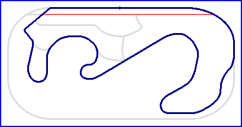

| Length | 3.194 Miles // 5.140 km | ||||||
| Direction | Clockwise | ||||||
Contact Information |
|||||||
| Address | The circuit is no longer opertional |
||||||
| Telephone | |||||||
| Website | |||||||
|
|||||||
Ontario Motor Speedway
Road Course (1970-1981)
|  | |||
| Speedway | Full Road Course | ||
| Road Course with West Extension | Road Course with East Extension | Short Road Course | |
| Length | 3.194 Miles // 5.140 km | ||||||
| Direction | Clockwise | ||||||
Contact Information |
|||||||
| Address | The circuit is no longer opertional |
||||||
| Telephone | |||||||
| Website | |||||||
|
|||||||
Lasted Updated: 05 May 2003 23:10:58 GMT Daylight Time